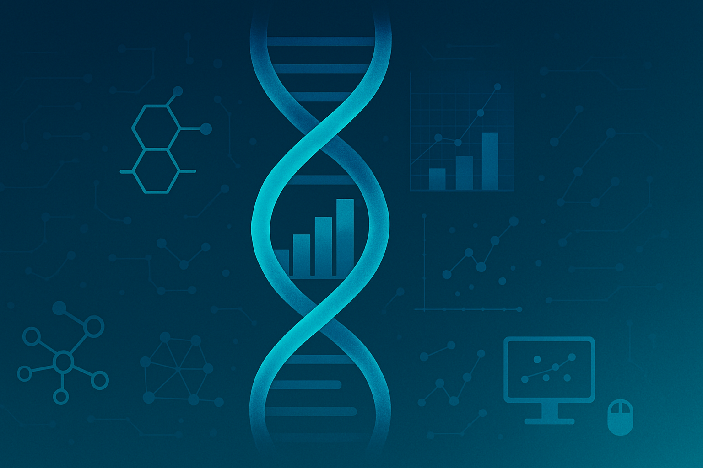

Welcome to Our Website
About Us Page

Turnaround Time
- We understand that time is critical in research. That’s why we ensure a rapid and efficient workflow, delivering high-quality results within short timeframes — without compromising accuracy.
Customized Bioinformatics Analysis
- Every research project is unique. We provide tailored bioinformatics solutions designed to align with your specific objectives, experimental design, and data type. Whether you're working with WGS, WES, RNA-seq, or single-cell datasets, we adapt our pipelines to fit your needs.
Why Choose Us?
- Proven expertise in genomics and data science
- Collaborative and transparent communication
- End-to-end support from raw data to publication-ready reports
- Affordable and flexible pricing
- Cutting-edge tools and methods tailored to your goals
User-Specific Downstream Analysis
- We don’t just analyze data — we provide insights that matter. Our downstream analysis is designed with your scientific questions in mind, offering detailed interpretation, functional enrichment, variant annotation, pathway mapping, and more.
Advanced Analysis
- Harness the power of next-generation bioinformatics. We utilize state-of-the-art algorithms and platforms to perform comprehensive, in-depth analysis of complex datasets — including multi-omics integration, single-cell RNA-seq, structural variant detection, and beyond.